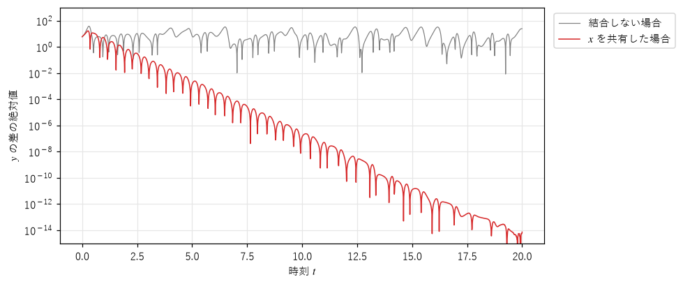
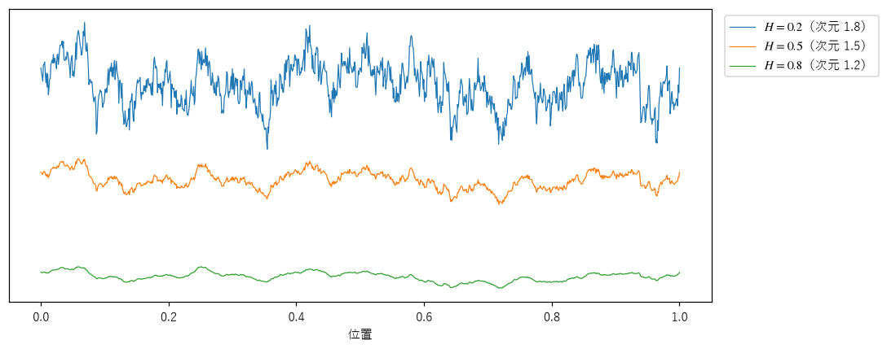
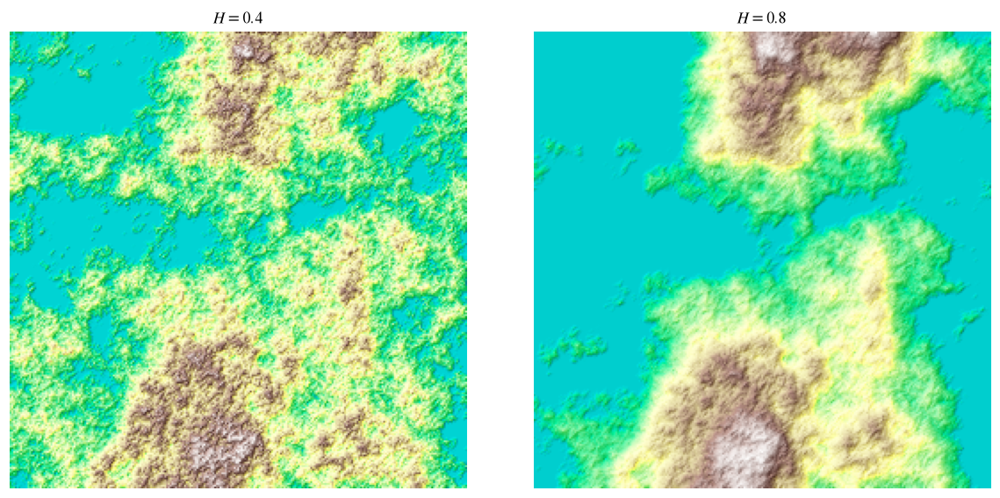
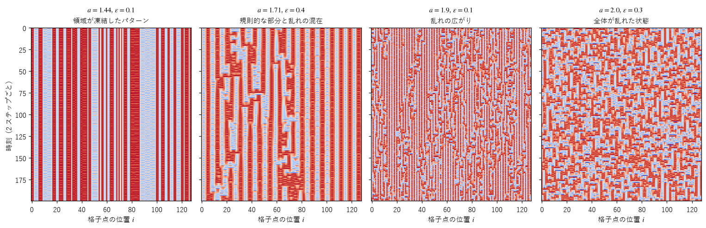
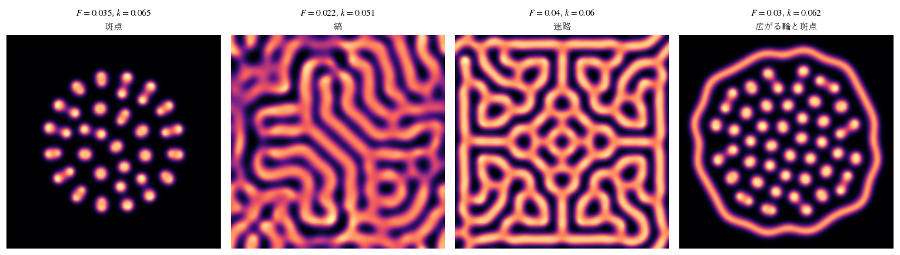

第 11 章 自然・工学の中のカオスとフラクタル
この章では、カオスとフラクタルが、自然現象の理解や工学の中でどのように使われているかを紹介する。前半では、気象、生物、通信などに現れるカオスと、地形の生成などに使われるフラクタルを扱う。後半では、多数の要素が空間に並んで相互作用する力学系を取り上げ、局所的な規則から大域的なパターンが生まれる、創発の仕組みを見る。
気象と予測
現代のカオス研究の出発点の 1 つは気象学である（それ以前にも、19 世紀末にポアンカレが天体の運動の研究で、カオス的な振る舞いの存在に気付いていた）。ローレンツが示したように、大気の運動はカオス的であり、初期値のわずかな誤差は数日で大きく成長する。観測網をどれほど充実させても、地表のすべての地点の気温や風速を誤差なく測ることはできないので、決定論的な予報には原理的な限界がある。
現在の数値予報では、この限界を前提としたアンサンブル予報（ensemble forecast）が使われている。観測値に少しずつ違う誤差を加えた多数の初期値から計算を行い、結果のばらつきを見る。計算結果がそろっていれば予報の信頼度は高く、ばらばらであれば低い。カオスによる予測の限界を、確率的な情報として利用しているのである。
生物と医学
ロジスティック写像は、もともと生物の個体数のモデルとして研究された。メイは、昆虫のように世代が重ならない生物の個体数が、環境の条件によっては、外からの乱れがなくても不規則に変動しうることを示した。実際の生態系で観測される個体数の変動のうち、どれだけが決定論的なカオスによるものかは、今も研究が続いている。
医学でも、カオスとフラクタルの考え方が使われている。健康な人の心拍の間隔は、一定ではなく、さまざまな時間の尺度でゆらいでいる。このゆらぎは統計的自己相似性を持ち、病気や加齢によってその性質が変わることが報告されている。肺の気管支や血管の枝分かれ構造がフラクタルに近いことも、限られた体積の中で表面積や到達範囲を大きくする仕組みとして理解されている。
カオスの工学的な利用
カオス同期
初期値鋭敏性を持つカオス的な系どうしは、同じ式でも、わずかな初期値の違いで別の振る舞いになる。ところが、1990 年にペコラとキャロルは、2 つのカオス的な系の一部の変数を共有させると、両者が完全に同じ振る舞いをするようになることを示した。これをカオス同期（chaos synchronization）という。
例として、ローレンツ方程式を 2 つ用意する。1 つ目（駆動系）はふつうに計算する。2 つ目（応答系）は \(y\)、\(z\) だけを持ち、\(x\) の代わりに駆動系の \(x\) を使う。
図 49 は、応答系を駆動系と違う初期値から始めたときの、\(y\) と \(y'\) の差である。差は指数関数的に小さくなり、2 つの系は完全に同期する。比較のために、結合しない 2 つのローレンツ方程式の差も示した。こちらは小さくならない。


図 49 応答系と駆動系の \(y\) の差（縦軸は対数目盛り）
カオス同期は、秘密の通信に応用する研究が行われてきた。送信側はカオス的な信号にメッセージを小さく重ねて送り、受信側は同じ式の応答系を同期させてカオスの成分を取り除き、メッセージを取り出す。ただし、この方式は現代の暗号のような安全性の保証を持たず、解読法も多く提案されている。カオス的な写像を乱数の生成に使う場合も、第 5 章で見た浮動小数点数の問題などがあるので、暗号用の乱数には、専用に設計された方法を使うべきである。
カオスの制御
カオスの中には、不安定な周期軌道が無数に埋め込まれている（第 5 章）。1990 年にオット、グレボギ、ヨークは、軌道がこれらの周期軌道の 1 つに近づいたときに、パラメータをわずかに調整して軌道を周期軌道の上にとどめる方法（OGY 法）を提案した。小さな操作で系の振る舞いを大きく変えられることは、初期値鋭敏性の裏返しである。この考え方は、レーザーや心臓の不整脈の制御などで研究されてきた。
フラクタルの工学的な利用
フラクタル地形
コンピュータグラフィックスでは、山や海岸線のような自然な地形を生成するのに、統計的自己相似性を持つ乱数の関数が使われる。代表的な方法が中点変位法（midpoint displacement）である。1 次元の場合、線分の両端の高さを決め、中点の高さを両端の平均にランダムな量を加えた値にする。できた 2 本の線分のそれぞれで同じ操作を繰り返し、そのたびに加えるランダムな量の大きさを \(2^{-H}\) 倍にする。
21def midpoint_displacement_1d(levels: int, hurst: float, rng: np.random.Generator) -> Array:
22 """長さ 2^levels + 1 の稜線（高さの列）を作る."""
23 n = 2**levels
24 h = np.zeros(n + 1)
25 scale = 1.0
26 step = n
27 while step > 1:
28 half = step // 2
29 mid = (h[:-1:step] + h[step::step]) / 2.0 # 各区間の両端の平均
30 h[half::step] = mid + scale * rng.normal(size=mid.shape)
31 scale *= 2.0 ** (-hurst)
32 step = half
33 return h
\(H\) はハースト指数（Hurst exponent）と呼ばれ、0 から 1 の値をとる。\(H\) が小さいほど、細かい凹凸が大きく残るギザギザの形になる。こうしてできる曲線は、非整数ブラウン運動（fractional Brownian motion）と呼ばれる確率過程の近似であり、グラフのフラクタル次元は \(2 - H\) になる。図 50 は、3 つの \(H\) で作った稜線である。


図 50 中点変位法で作った稜線（同じ乱数を使い、\(H\) だけを変えた）
2 次元に拡張した方法がダイヤモンド・スクエア法（diamond-square algorithm）である。正方形の 4 隅の平均にランダムな量を加えて中心の高さを決める段階（ダイヤモンド段階）と、周りの 4 点の平均にランダムな量を加えて辺の中点の高さを決める段階（スクエア段階）を交互に繰り返す。図 51 は、できた高さの地図に、高さに応じた色と陰影を付けたものである。地形の表面のフラクタル次元は \(3 - H\) になる。


図 51 ダイヤモンド・スクエア法で作った地形（高さ 0.4 未満を海とした）
ゲームや映像の地形生成では、パーリンノイズなどの滑らかなノイズを、周波数を 2 倍、振幅を半分（など）にしながら重ね合わせる方法もよく使われる。これも、大きな起伏から小さな凹凸までを同じ規則で作るという点で、同じ考え方に基づいている。
その他の応用
フラクタル・アンテナ：コッホ曲線やシェルピンスキーのギャスケットのような形のアンテナは、小さな面積に長い導体を収められ、さまざまな大きさの構造を持つので、複数の周波数帯で動作させやすい。携帯電話の内蔵アンテナなどに使われてきた。
フラクタル画像圧縮：画像の各部分を、画像自身の別の部分を縮小・変形したもので近似し、その変換（IFS に似たもの）だけを記録する方法である。第 8 章のコラージュ定理に基づく。1990 年代に盛んに研究されたが、符号化に時間がかかることなどから、現在の画像形式では主流になっていない。
材料と物理：金属の破断面、電気の放電の跡（リヒテンベルク図形）、粒子が付着して成長する結晶（拡散律速凝集）などは、フラクタルな形になることが知られている。
空間に広がる力学系
ここまで扱ってきた力学系の多くは、状態が 1〜4 個の数で表される小さな系だった。現実の創発現象の多くは、空間に並んだ多数の要素が、近くの要素と相互作用することで起きる。ここでは、そのような系の例を 2 つ取り上げる。
結合写像格子
結合写像格子（coupled map lattice、CML）は、1980 年代に金子邦彦が導入したモデルで、1 次元（または 2 次元）に並べたカオス的な写像を、隣どうしで結合したものである。各格子点 \(i\) の値 \(x(i)\) を、次の規則で同時に更新する。
\(f(x) = 1 - a x^2\) はロジスティック写像と同じ種類の写像で、\(a\) が大きいほどカオスが強い。\(\varepsilon\) は隣との結合の強さである。各格子点は、自分の写像の値と、両隣の写像の値の平均を混ぜたものに更新される。


図 52 結合写像格子の時空図（横軸が格子点の位置、縦軸が時刻で、下に向かって時間が進む）
図 52 は、128 個の格子点の値の時間変化を、横軸に位置、縦軸に時刻をとって描いた時空図である。パラメータによって、次のようにさまざまなパターンが現れる。
格子が、同じように振動する領域（ドメイン）に分かれ、その境界が動かずに凍結する。
規則的に振動する領域と、乱れた領域が混在し、乱れた領域が広がったり消えたりする。
全体が乱れ、空間的にも時間的にも不規則な状態（時空カオス）になる。
個々の格子点の規則は単純な写像であり、それが隣と弱く結合するだけで、領域の形成、欠陥の運動、乱流のような状態など、多様なパターンが現れる。結合写像格子は、乱流や生物の細胞集団などのモデルとして研究されてきた。
反応拡散系とチューリング・パターン
1952 年、計算機科学の創始者の 1 人であるアラン・チューリングは、論文「形態形成の化学的基礎」で、2 種類の化学物質が反応しながら拡散するだけで、一様な状態から自発的に模様が生まれうることを示した。この模様をチューリング・パターン（Turing pattern）という。チューリングは、動物の体の模様などがこの仕組みで生まれる可能性を提案した。後に、熱帯魚の縞模様が、実際にチューリング・パターンのように変化することが観察されている。
模様が生まれるための鍵は、2 つの物質の拡散の速さの違いにある。自分自身を増やす物質（活性化因子）と、それを抑える物質（抑制因子）があり、抑制因子のほうが速く拡散するとする。ある場所で活性化因子が少し増えると、その場所ではさらに増えるが、周りには抑制因子が先に広がって、増えるのを抑える。その結果、活性化因子の多い場所が、一定の間隔を空けて並ぶ。次のグレイ＝スコット・モデルでは、\(v\) が自分自身を増やす活性化因子の役割を、\(v\) に消費される原料 \(u\) が抑制の役割をする。\(u\) のほうが速く拡散する（サンプルでは拡散係数を \(D_u = 0.16\)、\(D_v = 0.08\) とした）。
ここでは、反応拡散系の代表的なモデルであるグレイ＝スコット・モデル（Gray–Scott model）を使う。物質 \(u\) と \(v\) の濃度が、次の方程式に従って変化する。
\(\nabla^2\) はラプラシアン（Laplacian）で、周りより濃度が低い場所では正、高い場所では負になり、拡散によって濃度がならされる効果を表す。\(u v^2\) は \(u\) が \(v\) に変わる反応、\(F(1 - u)\) は \(u\) の補給、\((F + k)v\) は \(v\) の除去を表す。
数値計算では、平面を格子に分け、ラプラシアンを「上下左右の 4 点の値の和から、中心の値の 4 倍を引いたもの」で近似する。時間は刻み幅 1 のオイラー法で進める。
30def gray_scott(f: float, k: float, n: int = 128, steps: int = 6000, seed: int = 0) -> Array:
31 """一様な状態の中央に小さな乱れを置き、steps ステップ（時間刻み 1）後の v の濃度を返す."""
32 rng = np.random.default_rng(seed)
33 u = np.ones((n, n))
34 v = np.zeros((n, n))
35 center = slice(n // 2 - 8, n // 2 + 8)
36 u[center, center] = 0.5
37 v[center, center] = 0.25
38 u += 0.02 * rng.random((n, n))
39 v += 0.02 * rng.random((n, n))
40 for _ in range(steps):
41 uvv = u * v * v
42 u += DU * laplacian(u) - uvv + f * (1.0 - u)
43 v += DV * laplacian(v) + uvv - (f + k) * v
44 return v
図 53 は、中央に小さな乱れを置いた一様な状態から、6000 ステップ計算した後の \(v\) の濃度である。\(F\) と \(k\) の組み合わせによって、斑点、縞、迷路など、まったく違う模様が生まれる。


図 53 グレイ＝スコット・モデルで生まれる模様（128 × 128 の格子）
1993 年にピアソンは、グレイ＝スコット・モデルの \(F\) と \(k\) を系統的に変えて計算し、自己複製する斑点を含む、多様な模様を分類した。反応拡散系は、局所的な規則（その場所での反応と、隣への拡散）だけで大域的なパターンが生まれる、創発の代表例である。ジェネラティブアートでも、模様の生成や、模様を動かすアニメーションの題材としてよく使われている。
まとめ
気象予報では、カオスによる予測の限界を前提に、多数の初期値から計算するアンサンブル予報が使われている。
カオス同期は、一部の変数を共有させることで 2 つのカオス的な系を同期させる現象で、通信への応用が研究されてきた。
中点変位法やダイヤモンド・スクエア法で、統計的自己相似性を持つ地形を生成できる。ハースト指数で凹凸の性質を調整できる。
結合写像格子や反応拡散系では、局所的な相互作用から、領域、時空カオス、斑点、縞などの大域的なパターンが生まれる。